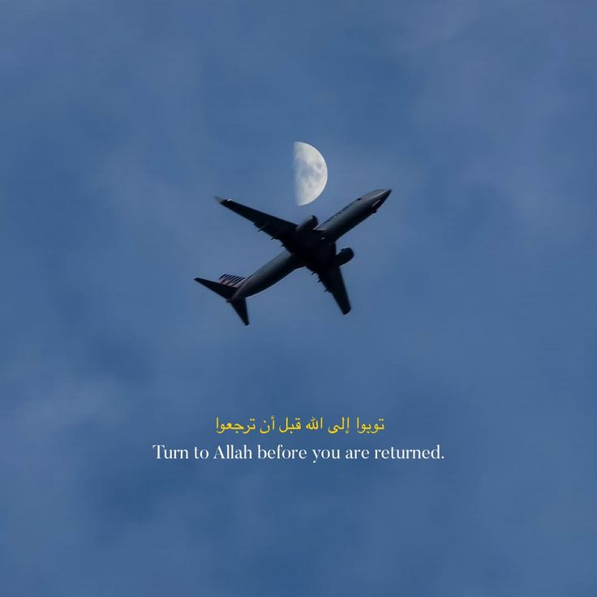

Strengthen Your Connection with Allah

There comes a time in every heart when the noise of the world fades, and the silence feels deafening. You sit
quietly, staring at the ceiling or out the window, wondering why your chest feels heavy despite everything
seeming "fine." You scroll through your phone, watch videos, and try to distract yourself — but nothing fills
the void. That's when you realize what your heart has been longing for all along — Allah.
Life pulls us in so many directions. We chase after grades, careers, friendships, and even social approval. But when we neglect our bond with Allah, a strange emptiness takes root. We smile in public, yet our hearts quietly ache. We achieve goals, yet still feel lost. Why? Because the soul craves its Creator. The heart was designed to find peace only in the remembrance of Allah.
“Verily, in the remembrance of Allah do hearts find rest.”(Quran 13:28)
You may feel distant from Allah right now. Perhaps you've missed prayers, lost track of your Quran reading, or fallen into bad habits. But know this — Allah has never left you.
You may think:
"I'm too sinful."
"I haven't prayed for months."
"How can I turn back after everything I've done?"
But Allah’s mercy is greater than your mistakes. He waits for you — not with anger, but with open arms.
The Prophet (ﷺ) said: "Allah says: O son of Adam, if your sins were to reach the clouds of the sky and you were then to ask forgiveness of Me, I would forgive you..." (Reference: Hadith 34, 40 Hadith Qudsi)
No sin is greater than His mercy. No distance is too far for His love to reach you. Just take the first step — talk to Him. Pour your heart out in dua. Tell Him your struggles, your fears, your regrets — He already knows, yet He loves to hear from you.
Salah isn’t just a ritual; it’s a conversation with your Creator. Each time you whisper "Allahu Akbar," you’re stepping out of this chaotic world and standing directly before Him — the One who controls your life, your future, your everything.
When you fall into sujood (prostration), don’t rush. Stay there. That’s the closest you'll ever be to Allah in this world. In that moment, empty your heart before Him — the tears, the pain, the silent cries no one else sees. Allah sees. He listens. He cares.
"The closest that a servant comes to his Lord is when he is prostrating, so make abundant supplication."
(Reference: Sahih Muslim 482)
So turn to Him.
Tonight, before you sleep, raise your hands and whisper:
"Ya Allah... I'm lost. I'm broken. But I need You. Please guide me back to You."
That one dua could be the beginning of a love story between you and your Creator — a bond stronger than anything this world could offer. ❤️
← Back to Blogs
The Emptiness That Only Allah Can Fill
Life pulls us in so many directions. We chase after grades, careers, friendships, and even social approval. But when we neglect our bond with Allah, a strange emptiness takes root. We smile in public, yet our hearts quietly ache. We achieve goals, yet still feel lost. Why? Because the soul craves its Creator. The heart was designed to find peace only in the remembrance of Allah.
“Verily, in the remembrance of Allah do hearts find rest.”(Quran 13:28)
You may feel distant from Allah right now. Perhaps you've missed prayers, lost track of your Quran reading, or fallen into bad habits. But know this — Allah has never left you.
Turning Back to Allah – No Matter How Far You’ve Strayed
You may think:
"I'm too sinful."
"I haven't prayed for months."
"How can I turn back after everything I've done?"
But Allah’s mercy is greater than your mistakes. He waits for you — not with anger, but with open arms.
The Prophet (ﷺ) said: "Allah says: O son of Adam, if your sins were to reach the clouds of the sky and you were then to ask forgiveness of Me, I would forgive you..." (Reference: Hadith 34, 40 Hadith Qudsi)
No sin is greater than His mercy. No distance is too far for His love to reach you. Just take the first step — talk to Him. Pour your heart out in dua. Tell Him your struggles, your fears, your regrets — He already knows, yet He loves to hear from you.
Finding Allah in Salah
Salah isn’t just a ritual; it’s a conversation with your Creator. Each time you whisper "Allahu Akbar," you’re stepping out of this chaotic world and standing directly before Him — the One who controls your life, your future, your everything.
When you fall into sujood (prostration), don’t rush. Stay there. That’s the closest you'll ever be to Allah in this world. In that moment, empty your heart before Him — the tears, the pain, the silent cries no one else sees. Allah sees. He listens. He cares.
"The closest that a servant comes to his Lord is when he is prostrating, so make abundant supplication."
(Reference: Sahih Muslim 482)
A Love That Never Leaves You
People may leave you. Friendships may break. Even family may drift apart. But Allah never leaves. He is the One who was there when you cried alone in your room. He is the One who comforted your heart when no one else knew your pain. And He is the One who will always welcome you back — no matter how many times you’ve fallen.So turn to Him.
Tonight, before you sleep, raise your hands and whisper:
"Ya Allah... I'm lost. I'm broken. But I need You. Please guide me back to You."
That one dua could be the beginning of a love story between you and your Creator — a bond stronger than anything this world could offer. ❤️